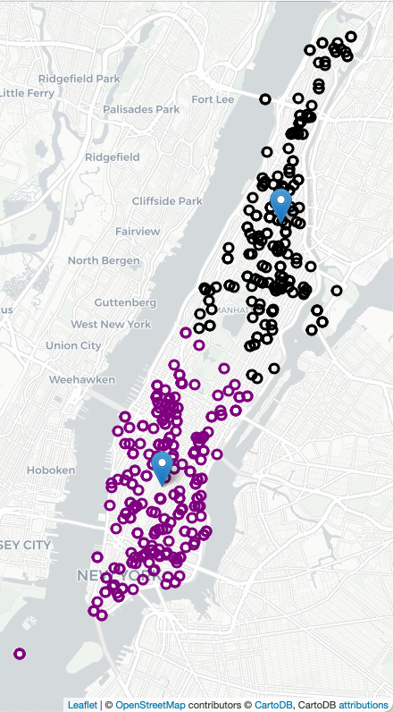
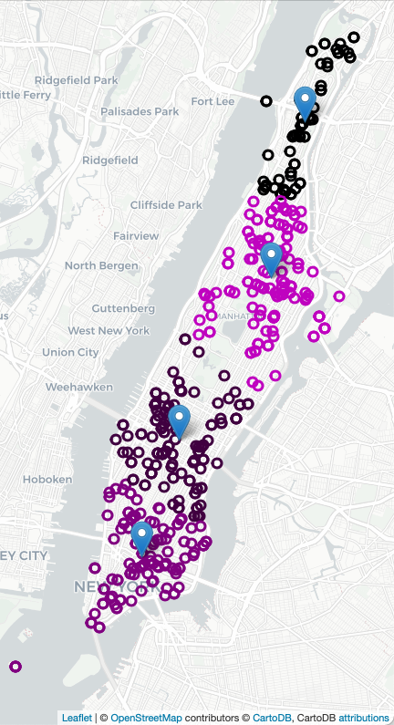
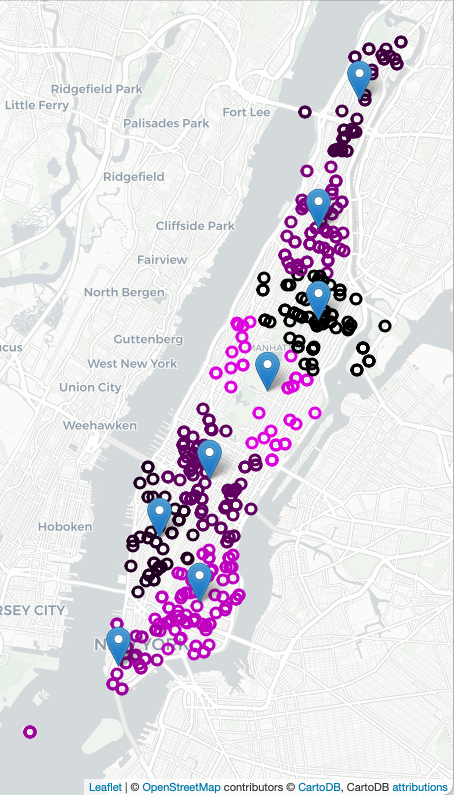
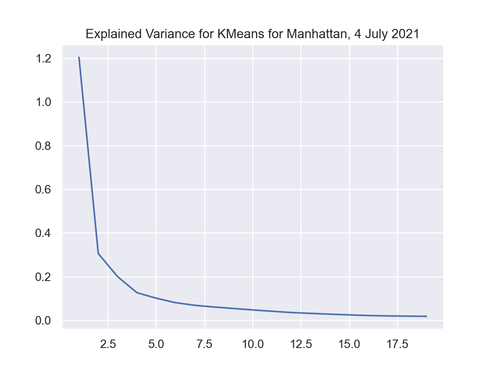

Program 5: EMS Clusters. Due noon, Friday, 17 November.
For this program, we are building on the clustering techniques from Lecture 11 and Classwork 11.1 which focused on different clustering algorithms.
Decreasing ambulance response times improves outcomes and
strategic placement of ambulance stations and overall allocation has been shown an effective approach. For example, here are all the calls for ambulances on 4 July 2021 in Manhattan (using Folium/Leaflet to create an interactive map):
To decide on where to "pre-place" ambulances, we will start with K-means clustering, where "K" is the number of ambulances available for that shift. For example, if there 2 ambulances available to be placed in Manhattan, we will look at previous ambulance calls for that shift and form 2 clusters and station each ambulance at the mean of the cluster. If two more ambulances become available, we can recompute the K-means algorithm for K=4, and place those 4 ambulances, each at the mean of the cluster found, and similarly for K=8:



In addition to K-means analysis, we will also compare to other clustering techniques and use standard approaches from sklearn as well as filter data by time and day.
Learning Objective: to enhance data cleaning skills and build understanding of clustering algorithms.
Available Libraries: pandas, datetime, sklearn, and core Python 3.6+.
Data Sources:
Data Sources: 911 System Calls (NYC OpenData)
Sample Datasets:
The program follows standard strategy for data cleaning and model building:
To download test datasets, see Program 2 for directions on accessing datasets at NYC Open Data.
Once you have downloaded some test data sets to your device, the next thing to do is format the data to be usable for analysis. We will need to do some cleaning, and also filter by day of week and time. Once we have the cleaned the data, we can split it into training and testing data sets. Add the following functions to your Python program:
make_df(file_name):
This function takes one input:
file_name: the name of a CSV file containing 911 System Calls from OpenData NYC.
AMBULANCE as part of the TYP_DESC are kept. The resulting DataFrame is returned.
add_date_time_features(df):
This function takes one input:
df: a DataFrame containing 911 System Calls from OpenData NYC created by make_df.
WEEK_DAY is added with the day of the week (0 for Monday, 1 for Tuesday, ..., 6 for Sunday) of the date in INCIDENT_DATE is added.
Another column, INCIDENT_MIN, that takes the time from INCIDENT_TIME and stores it as the number of minutes since midnight. The resulting DataFrame is returned.
datetime objects) and the total seconds (of timedelta objects).
filter_by_time(df, days=None, start_min=0, end_min=1439):
This function takes four inputs:
df: a DataFrame containing 911 System Calls from OpenData NYC.
days: a list of integers ranging from 0 to 6, representing the days of the week. The default value is None and is equivalent to the list containing all days:
[0,1,2,3,4,5,6].
start_min: a non-negative integer value representing the starting time. With end_min, it representing the range, inclusive, for the time, in minutes, that should be selected. The default value give the range of [0,1439] which ranges from midnight (0 minutes) to (1439 representing 23:59 since 23 hours + 59 minutes = 23*60+59 minutes = 1439 minutes).
end_min: a non-negative integer value representing the ending time. With start_min, it representing the range, inclusive, for the time, in minutes, that should be selected. The default value give the range of [0,1439] which ranges from midnight (0 minutes) to (1439 representing 23:59 since 23 hours + 59 minutes = 23*60+59 minutes = 1439 minutes).
days (or all weekdays if None is given) and incident times in [start_min, end_min] inclusive (e.g. contains the endpoints).
For example, if we use the small dataset from 4 July 2021:
df = make_df('NYPD_Calls_Manhattan_4Jul2021.csv')
print(df[['INCIDENT_TIME','TYP_DESC','Latitude','Longitude']])
INCIDENT_TIME TYP_DESC Latitude Longitude
7 00:01:51 AMBULANCE CASE: CARDIAC/OUTSIDE 40.724578 -73.992519
27 00:06:12 AMBULANCE CASE: CARDIAC/INSIDE 40.807719 -73.964240
51 00:12:12 AMBULANCE CASE: SERIOUS/TRANSIT 40.732019 -74.000734
53 00:12:38 AMBULANCE CASE: EDP/INSIDE 40.789348 -73.947352
54 00:12:38 AMBULANCE CASE: EDP/INSIDE 40.789348 -73.947352
... ... ... ... ...
5175 23:50:02 AMBULANCE CASE: WATER RESCUE 40.711839 -74.011234
5176 23:50:02 AMBULANCE CASE: WATER RESCUE 40.711839 -74.011234
5205 23:57:11 AMBULANCE CASE: UNCONSCIOUS/TRANSIT 40.732019 -74.000734
5211 23:57:59 AMBULANCE CASE: EDP/INSIDE 40.827547 -73.937461
5212 23:57:59 AMBULANCE CASE: EDP/INSIDE 40.827547 -73.937461
[459 rows x 4 columns]Let's add in the date and time features:
df = add_date_time_features(df)
print(df[['INCIDENT_DATE','WEEK_DAY','INCIDENT_TIME','INCIDENT_MIN']]) INCIDENT_DATE WEEK_DAY INCIDENT_TIME INCIDENT_MIN
7 07/04/2021 6 00:01:51 1.850000
27 07/04/2021 6 00:06:12 6.200000
51 07/04/2021 6 00:12:12 12.200000
53 07/04/2021 6 00:12:38 12.633333
54 07/04/2021 6 00:12:38 12.633333
... ... ... ... ...
5175 07/04/2021 6 23:50:02 1430.033333
5176 07/04/2021 6 23:50:02 1430.033333
5205 07/04/2021 6 23:57:11 1437.183333
5211 07/04/2021 6 23:57:59 1437.983333
5212 07/04/2021 6 23:57:59 1437.983333
[459 rows x 4 columns]
[Finished in 2.294s]WEEK_DAY column has the same value (i.e. 6) for every row.
Let's add in the date and time features:
df_early_am = filter_by_time(df,times=[0,360])
print(df_early_am[['INCIDENT_DATE','WEEK_DAY','INCIDENT_TIME','INCIDENT_MIN']]) INCIDENT_DATE WEEK_DAY INCIDENT_TIME INCIDENT_MIN
7 07/04/2021 6 00:01:51 1.850000
27 07/04/2021 6 00:06:12 6.200000
51 07/04/2021 6 00:12:12 12.200000
53 07/04/2021 6 00:12:38 12.633333
54 07/04/2021 6 00:12:38 12.633333
... ... ... ... ...
1041 07/04/2021 6 05:08:49 308.816667
1068 07/04/2021 6 05:21:49 321.816667
1075 07/04/2021 6 05:24:21 324.350000
1079 07/04/2021 6 05:28:13 328.216667
1111 07/04/2021 6 05:41:34 341.566667
[76 rows x 4 columns]
We can build a map with the calls for ambulances shaded by the time of the call:
import folium
import matplotlib.colors
def cc(minute,scale):
return(matplotlib.colors.to_hex( (minute/scale,0,minute/scale) ))
m = folium.Map(location=[40.7678,-73.9645],zoom_start=13,tiles="cartodbpositron")
df.apply( lambda row: folium.CircleMarker(location=[row["Latitude"], row["Longitude"]],
radius=5, popup=(row['INCIDENT_TIME']+": "+row['TYP_DESC']),
color=cc(row['INCIDENT_MIN'],2000))
.add_to(m) ,
axis=1)
m.save('4_July_map.html')Next, let's build some models, using the clustering techniques from Lecture 11. Write the following functions:
compute_kmeans(df, num_clusters = 8, n_init = 'auto', random_state = 1870):
This function takes four inputs:
df: a DataFrame containing 911 System Calls from OpenData NYC.
n_init: Number of times the k-means algorithm is run with different centroid seeds. The final results is the best output of n_init consecutive runs in terms of inertia. The default value is auto.
num_clusters: an integer representing the number of clusters. The default value is 8.
random_state: the random seed used for KMeans. The default value is 1870.
num_clusters on the latitude and longitude data of the provided DataFrame. Returns the cluster centers and predicted labels computed via the model.
compute_gmm(df, num_clusters = 8, random_state = 1870):
This function takes three input:
df: a DataFrame containing 911 System Calls from OpenData NYC.
num_clusters: an integer representing the number of clusters. The default value is 8.
random_state: the random seed used for GaussianMixture. The default value is 1870.
num_clusters on the latitude and longitude data of the provided DataFrame. Returns the array of the predicted labels computed via the model.compute_agglom(df, num_clusters = 8, linkage='ward'):
This function takes three inputs:
df: a DataFrame containing 911 System Calls from OpenData NYC.
num_clusters: an integer representing the number of clusters. The default value is 8.
linkage: the linkage criterion used determining distances between sets for AgglomerativeClustering. The default value is 'ward'.
num_clusters on the latitude and longitude data of the provided DataFrame and default linkage (i.e. ward). Returns the array of the predicted labels computed via the model.compute_spectral(df, num_clusters = 8, affinity='rbf',random_state=1870):
This function takes four inputs:
df: a DataFrame containing 911 System Calls from OpenData NYC.
num_clusters: an integer representing the number of clusters. The default value is 8.
affinity: method used for computing the affinity matrix by SpectralClustering. The default value is 'rbf'.
random_state: the random seed used for SpectralClustering. The default value is 1870.
num_clusters on the latitude and longitude data of the provided DataFrame and affinity matrix (i.e. affinity). Returns the array of the predicted labels computed via the model.We can also make maps with the computed clusters. We use the compute_locations function with different values of num_clusters. Since we are repeating the same actions for K = 2, 4, 6, we wrote a helper function to create the HTML maps:
def make_map(df, num_clusters, out_file):
centers,labels = compute_kmeans(df,num_clusters = num_clusters)
df_map = df[ ['Latitude','Longitude','INCIDENT_TIME','INCIDENT_MIN','TYP_DESC'] ]
df_map = df_map.assign(Labels = labels)
m = folium.Map(location=[40.7678,-73.9645],zoom_start=13,tiles="cartodbpositron")
df_map.apply( lambda row: folium.CircleMarker(location=[row["Latitude"], row["Longitude"]],
radius=5, popup=(row['INCIDENT_TIME']+": "+row['TYP_DESC']),
color=cc(row['Labels'],num_clusters))
.add_to(m), axis=1)
for i in range(num_clusters):
x,y = centers[i]
folium.Marker(location=[x,y],popup = "Cluster "+str(i)).add_to(m)
m.save(out_file)
make_map(df,2,'map_4_July_2clusters.html')
make_map(df,4,'map_4_July_4clusters.html')
make_map(df,8,'map_4_July_8clusters.html')Another function can be used to filter the dataset by day of the week and time of day. For example, still working with the 4 July data set:
df_mondays = filter_by_time(df, days = [0])
print(df_mondays)Empty DataFrame
Columns: [CAD_EVNT_ID, CREATE_DATE, INCIDENT_DATE, INCIDENT_TIME, NYPD_PCT_CD, BORO_NM, PATRL_BORO_NM, GEO_CD_X, GEO_CD_Y, RADIO_CODE, TYP_DESC, CIP_JOBS, ADD_TS, DISP_TS, ARRIVD_TS, CLOSNG_TS, Latitude, Longitude, WEEK_DAY, INCIDENT_MIN]
Index: []Let's next filter for early morning times:
df_early_am = filter_by_time(df,times=[0,360])
print(df_early_am[['INCIDENT_DATE','WEEK_DAY','INCIDENT_TIME','INCIDENT_MIN']]) INCIDENT_DATE WEEK_DAY INCIDENT_TIME INCIDENT_MIN
7 07/04/2021 6 00:01:51 1.850000
27 07/04/2021 6 00:06:12 6.200000
51 07/04/2021 6 00:12:12 12.200000
53 07/04/2021 6 00:12:38 12.633333
54 07/04/2021 6 00:12:38 12.633333
... ... ... ... ...
1041 07/04/2021 6 05:08:49 308.816667
1068 07/04/2021 6 05:21:49 321.816667
1075 07/04/2021 6 05:24:21 324.350000
1079 07/04/2021 6 05:28:13 328.216667
1111 07/04/2021 6 05:41:34 341.566667
[76 rows x 4 columns]We can use other methods for clustering, printing out the labels for the uly 4 dataset:
print(compute_gmm(df))
print(compute_agglom(df))
[1 7 1 0 0 1 1 0 0 4 0 2 1 5 5 2 2 1 1 4 4 4 4 5 1 6 3 5 3 3 7 0 7 1 3 3 3
3 1 2 2 7 6 1 1 1 2 0 0 4 5 3 4 6 6 3 1 3 3 1 6 4 6 0 6 6 3 2 6 3 1 1 1 1
4 4 5 2 1 2 2 7 7 1 1 5 3 1 0 5 5 4 4 2 0 0 0 0 2 2 4 4 3 1 1 7 4 3 3 6 6
2 1 0 3 3 1 5 5 2 3 3 1 1 5 5 2 2 0 2 2 3 2 2 1 5 5 1 5 0 0 0 2 2 1 1 5 2
1 3 0 5 5 5 1 1 2 0 0 7 7 7 6 6 3 3 4 4 1 1 1 1 1 3 1 7 4 4 0 1 5 1 3 7 0
4 4 3 1 3 3 0 0 0 0 1 1 1 6 6 0 0 0 0 5 2 2 5 5 3 4 4 1 4 2 0 2 0 2 2 1 1
1 3 3 1 3 3 1 0 0 5 5 1 5 5 1 7 5 2 1 0 0 0 1 5 2 0 2 1 4 4 1 1 4 7 7 3 3
4 1 1 7 7 5 5 0 1 5 1 1 0 7 0 0 2 0 7 7 5 1 2 3 1 1 1 1 3 6 6 4 5 5 2 2 0
3 0 0 2 5 5 0 1 3 7 7 5 5 3 0 6 0 0 1 2 4 5 2 1 3 3 1 1 2 0 1 2 2 2 3 3 4
4 5 5 1 2 0 3 4 3 3 0 1 6 1 1 4 1 4 4 3 6 6 6 2 2 2 3 6 3 3 1 0 5 3 5 2 2
3 3 6 6 2 2 3 6 6 2 0 0 3 3 2 0 3 2 2 3 3 4 4 6 6 1 6 4 5 5 5 4 6 1 1 1 4
2 0 3 5 2 1 3 1 4 3 1 0 3 5 5 5 3 3 7 3 1 2 2 2 4 4 2 2 2 1 1 3 3 2 3 5 1
1 1 0 0 0 0 4 4 5 6 6 6 1 2 2]
[0 6 0 3 3 0 0 3 3 2 3 4 0 7 7 4 4 0 0 2 2 2 2 7 0 0 1 0 1 1 6 3 1 0 1 1 1
1 0 4 4 4 5 0 0 0 4 3 3 2 3 1 2 0 0 1 0 1 1 0 0 2 0 3 0 0 1 4 0 1 0 0 0 0
2 2 3 4 0 4 4 1 1 1 0 3 1 0 3 7 7 2 2 4 3 3 3 3 4 4 2 2 1 0 0 6 2 1 1 0 0
4 0 4 1 1 0 0 0 4 1 1 0 0 7 7 4 4 3 4 4 1 4 4 0 7 7 0 7 3 3 3 4 4 0 0 7 4
0 1 3 7 0 0 0 0 4 3 3 6 6 4 5 5 1 1 2 2 0 0 0 0 0 1 0 6 2 2 3 0 7 0 1 6 3
2 2 1 0 0 0 3 3 3 3 0 0 0 0 5 3 3 3 3 7 4 4 7 7 1 2 2 0 4 4 3 4 6 4 4 0 0
0 1 1 0 1 1 0 3 3 7 7 0 3 3 0 6 3 4 0 3 3 3 0 7 4 3 4 0 2 4 0 0 2 6 6 1 1
2 0 0 6 6 3 3 3 0 7 5 5 3 6 3 3 4 3 6 6 0 0 4 1 0 0 0 0 1 5 5 2 7 7 4 4 3
1 3 3 4 7 7 3 0 1 6 6 7 7 7 3 0 3 3 0 4 2 7 4 0 1 1 1 1 4 3 0 4 4 4 1 1 2
2 0 0 0 4 3 1 2 1 1 3 0 5 0 0 2 0 2 2 1 5 5 5 4 4 4 1 5 1 1 0 3 7 1 3 4 4
1 1 5 5 4 4 1 0 0 4 3 3 1 1 4 3 1 4 4 1 1 2 2 5 5 0 5 2 7 3 3 2 5 0 0 0 2
4 4 1 7 4 0 1 0 2 1 0 3 1 7 3 3 1 1 6 1 0 4 4 4 2 2 4 4 4 0 0 1 1 4 1 3 0
0 0 3 3 3 3 2 2 3 5 5 5 0 4 4]
compute_explained_variance(df, k_vals = None, random_state = 1870):
This function takes three inputs:
df: a DataFrame containing 911 System Calls from OpenData NYC.
k_vals: a list of integers representing values for the number of clusters. The no value is provided, the function uses k_vals = [1,2,3,4,5].
random_state: the random seed used for KMeans. The default value is 55.
K. This can be computed manually or via the inertia_ attribute of the KMeans model.
We can use the function compute_explained_variance to assess the best number of clusters:
k_vals = list(range(1,20))
ev = compute_explained_variance(df,K=k_vals)
sns.lineplot(k_vals,ev)
plt.title('Explained Variance for KMeans for Manhattan, 4 July 2021')
plt.show()

showing a sharp drop-off to K=5 that quickly flattens, showing that additional clusters, beyond 10, do not significantly improve the average distance to the assigned means. This suggests that a reasonable number of clusters is around 8.
Each programming assignment includes functions that test that your code works (a "test suite"). In Programs 1 & 2, we wrote the test functions by hand. For Programs 3-6, we will also use pytest, a standard Python testing framework. Before you start, make sure that your IDE has pytest installed:
pip install -U pytestPytest is one of the most popular testing frameworks for Python. For this program, we will introduce the core testing features (and will introduce more features, such as parametrizing, in future programs). For more details, see Lecture 5, pytest docs and Think CS: Chapter 20.
test_add_date_time_features():
This function takes no inputs.
Returns True if the function add_date_time_features performs correctly and False otherwise.
test_filter_by_time():
This function takes no inputs.
Returns True if the function filter_by_time performs correctly and False otherwise.
Trying first on the correct function, assuming that your program is called p5.py, we can invoke pytest from the command-line:
pytest p5.py::test_add_date_time_features======================================= test session starts ========================================
platform darwin -- Python 3.11.5, pytest-7.4.2, pluggy-1.3.0
rootdir: /Users/stjohn/gitHub/dataScience/programs/fall23/program05
collected 1 item
p5.py . [100%]
======================================== 1 passed in 1.63s =========================================
pytest looks for a function called: test_add_date_time_features() in the file p3.py. It then runs test_add_date_time_features, which tests the correctness of the function add_date_time_features and reports back the results.